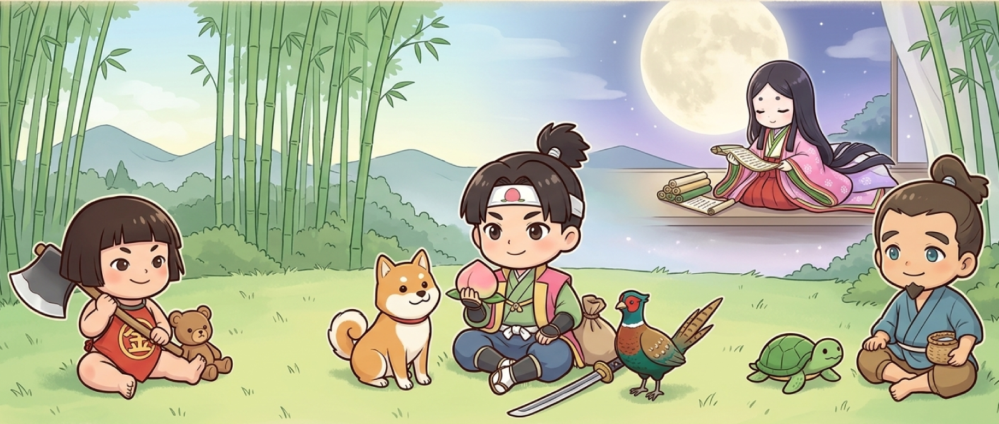

はじめまして、管理人のしゅうです。
誰もが子供の頃に聞いたあの昔話には、実はおもしろい裏の話がいっぱいあるんですよ。
桃太郎、浦島太郎、かぐや姫、金太郎。物語の背景には、当時の人たちがどんな場所で、
どんな風に生きていたのか、そんな歴史のヒントが隠されているかもしれません。
物語の登場人物たちが 背負っていた時代や、少し意外な素顔に触れる解説コーナー「実はね・・・」
伝承の裏側に隠された物語の向こう側を、少し覗いてみませんか？